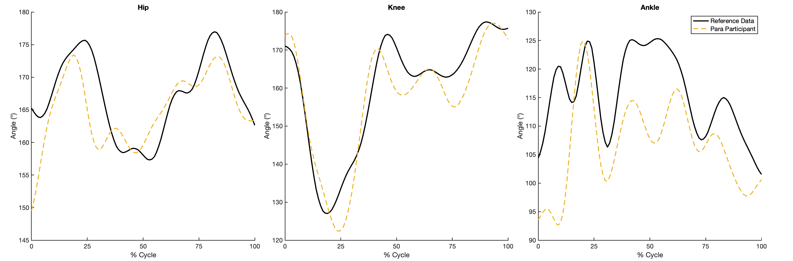
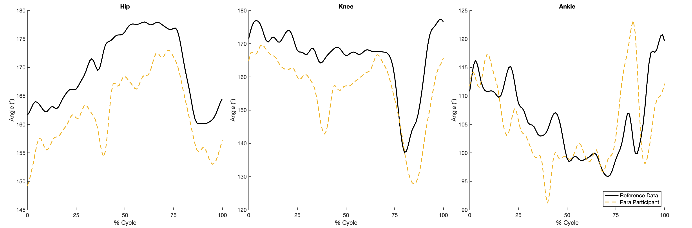

Comparing reference non-impaired (NI) and Para participant data.
A comparison between reference non-impaired (NI) data (videos of a single participant) and a Para participant are shown.
Full-length trial
NI and Para participants side by side. The following video shows the performance of gait from a reference NI and Para participant
Single gait cycle tracking with joint angles
NI and Para participants side by side.
Joint angle comparison
Reference non-impaired data and Para participant hip, knee, and ankle joint angles overlayed during gait.

Full-length trial
NI and Para participants side by side. The following video shows the performance of tandem gait from a reference NI and Para participant.
Single tandem gait cycle tracking with joint angles
NI and Para participants side by side.
Joint angle comparison
Reference non-impaired data and Para participant hip, knee, and ankle joint angles overlayed during tandem gait.
